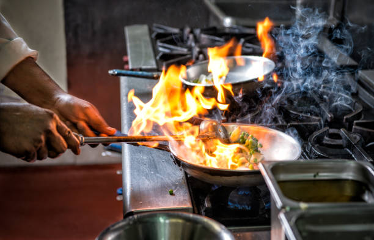

Our Philosophy

At Peniel's Kitchen, we believe that dining is more than just eating; it's an experience that should nourish both body and soul. Our philosophy is rooted in three core principles: quality, hospitality, and community. We are committed to excellence in every aspect of our cuisine.
Quality
We use only the finest ingredients to create dishes that are both delicious and nutritious. Our chefs are dedicated to perfecting their craft, ensuring that each meal is a masterpiece of flavor and presentation.
Hospitality
Our guests are at the heart of everything we do. We strive to create a warm and welcoming atmosphere where everyone feels valued and appreciated. From the moment you walk through our doors, you are treated like family.